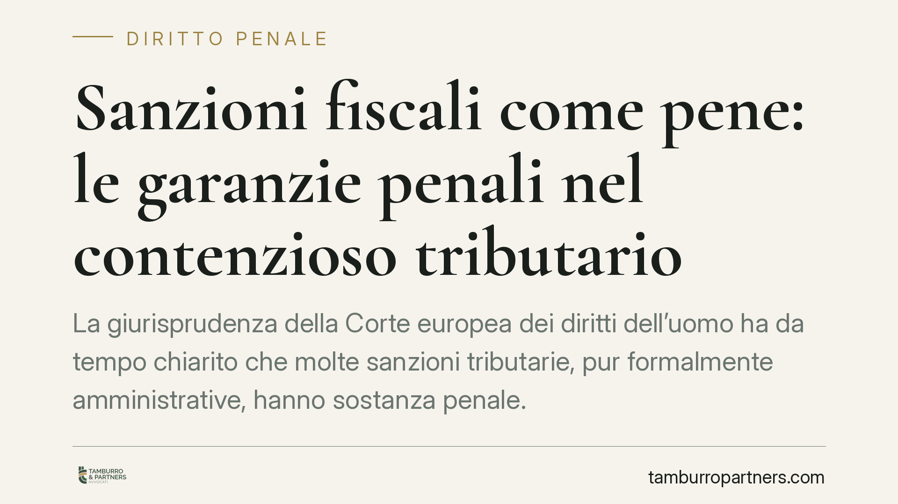

Sanzioni fiscali come pene: le garanzie penali nel contenzioso tributario
La giurisprudenza della Corte europea dei diritti dell'uomo ha da tempo chiarito che molte sanzioni tributarie, pur formalmente amministrative, hanno sostanza penale. Da qui l'estensione al contenzioso fiscale di garanzie tipiche del processo penale: equo processo, ne bis in idem, diritto al silenzio. Un principio con ricadute concrete sulla difesa del contribuente.

Il principio: conta la sostanza, non l'etichetta
La questione nasce da un orientamento consolidato della Corte europea dei diritti dell'uomo (Corte EDU). Già con la sentenza Engel c. Paesi Bassi (1976) la Corte ha elaborato i cosiddetti *criteri Engel* per stabilire quando una sanzione ha natura "penale" ai fini dell'art. 6 della Convenzione, a prescindere dalla qualificazione formale data dal diritto interno.
I tre criteri sono: la qualificazione giuridica della violazione nell'ordinamento nazionale; la natura stessa dell'illecito; il grado di severità della sanzione. I tre indici sono alternativi: basta che la sanzione persegua una finalità afflittiva e deterrente, e non meramente risarcitoria, perché scatti la garanzia penale.
Applicando questi criteri al diritto tributario, con Jussila c. Finlandia (2006) la Corte ha riconosciuto natura penale alle sovrattasse fiscali di importo significativo. In Grande Stevens c. Italia (2014) ha ribadito il principio in materia di sanzioni per abuso di mercato, condannando l'Italia proprio sul fronte del *ne bis in idem*.
Quali garanzie si estendono al Fisco
Quando una sanzione tributaria supera la soglia di afflittività, il contribuente può invocare le garanzie dell'art. 6 CEDU. Tra le più rilevanti:
- il diritto a un equo processo, con parità delle armi e contraddittorio pieno;
- il diritto al silenzio e a non autoincriminarsi, che incide sul valore delle dichiarazioni rese in sede di verifica;
- il principio di legalità e la possibile applicazione del trattamento più favorevole (*lex mitior*).
Il riferimento normativo interno resta costituito dal D.lgs. 472/1997 (disposizioni generali sulle sanzioni amministrative tributarie) e dal D.lgs. 74/2000 per i reati tributari in senso proprio.
Il nodo del ne bis in idem
La garanzia più delicata è il divieto di doppio giudizio per lo stesso fatto. Qui va letta con attenzione la sentenza A e B c. Norvegia (2016): la Corte di Strasburgo ha ammesso che il cumulo tra sanzione amministrativa e procedimento penale sullo stesso fatto non viola automaticamente il *ne bis in idem*, purché tra i due procedimenti esista una connessione sostanziale e temporale sufficientemente stretta (*close connection in substance and time*).
In concreto, il doppio binario sanzionatorio sopravvive se i procedimenti perseguono scopi complementari, sono prevedibili, evitano duplicazioni probatorie e tengono conto della sanzione già inflitta nel dosare quella successiva. Dove questa connessione manca, la duplicazione diventa censurabile.
La riforma delle sanzioni e la questione della retroattività
La revisione del sistema sanzionatorio tributario intervenuta nel 2024 (D.lgs. 87/2024) ha rimodulato numerose sanzioni, in diversi casi in misura meno gravosa. Un punto però va chiarito senza ambiguità: la riforma dispone l'applicazione delle nuove misure alle violazioni commesse dopo la sua entrata in vigore.
L'applicazione retroattiva del trattamento più favorevole ai fatti anteriori è, allo stato, questione aperta e controversa. La clausola di irretroattività contenuta nella riforma è oggetto di dubbi di legittimità costituzionale e di compatibilità con i principi convenzionali. Non si tratta quindi di un beneficio acquisito per i fatti pregressi, ma di un profilo da verificare caso per caso e da coltivare nel contenzioso.
Un chiarimento necessario
Le pronunce della Corte di Strasburgo non annullano automaticamente gli atti interni né riaprono i termini scaduti. Operano come parametro interpretativo e, nei limiti di legge, come possibile base per rimedi specifici. Non esiste alcuna garanzia di esito favorevole: l'applicazione concreta dei principi convenzionali dipende dai fatti e dalla fase procedurale.
Cosa fare in concreto
- Verificare la natura "penale" della sanzione contestata applicando i criteri Engel, in particolare il grado di afflittività.
- Valutare, prima di rendere dichiarazioni in sede di verifica o rispondere a questionari dell'amministrazione, i possibili riflessi autoaccusatori alla luce del diritto al silenzio.
- Ricostruire eventuali procedimenti paralleli sullo stesso fatto e misurare la connessione sostanziale e temporale rilevante per il ne bis in idem.
- Esaminare se la riforma del 2024 incida sulla posizione, tenendo presente che la retroattività del trattamento più favorevole è contestata e va eccepita.
- Documentare per tempo violazioni delle garanzie dell'art. 6 CEDU, così da poterle far valere nelle sedi competenti.
---
Contributo informativo a cura di Tamburro & Partners - Avv. Giuseppe Tamburro. Non costituisce parere legale.
Ogni condominio ha una storia a sé.
Se gestisci un'amministrazione e vuoi un confronto su una specifica questione condominiale, scrivi allo studio. Ti rispondiamo entro un giorno lavorativo.